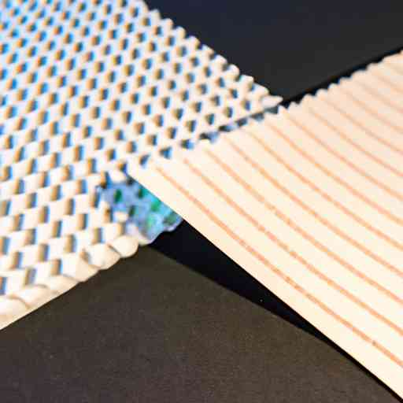

The Marvel of Miniaturization: Wafer Scale Chips Revolutionizing AI

Peering into the microcosmic world of chip technology, where components are measured in nanometers and pushing the limits is the norm, we find ourselves amidst a technology revolution. One such innovation driving this upheaval is wafer scale integration in creating chips, an idea that's putting a new spin on traditional chip-making processes, and is set to radically transform artificial intelligence (AI).
The Leap From Micro to Wafer Scale Integration
Conventional microelectronic devices, critical for powering our smartphones and computers, function using microchips. These tiny components etched with semiconductors are manufactured by imprinting circuits on silicon wafers, and slicing them into many individual chips.
However, the prolific growth of AI and the immense computational power it demands pose a challenge. Enter, Wafer Scale Engine (WSE), a revolutionary approach that defies the slice and dice methodology. It leverages the complete silicon wafer to build a single massive chip, thus morphing the entire wafer into a working electronic powerhouse!
American tech company, Cerebras Systems, effectively demonstrated this enormous leap in chip technology with the introduction of their wafer scale chip, marking a new era in AI and deep learning.
Wafer Scale Engine: Scaling New Heights In AI
Cerebras' WSE, the world’s largest computer chip, is approximately the size of an iPad. Compared to the largest graphics processing unit (GPU), which possesses 21.1 billion transistors and measures 815 square millimeters, the WSE blows it out of the water with 1.2 trillion transistors sprawled over an area of 46,225 square millimeters. That's mind-boggling computational might packed into one massive chip!
This colossal scale means a quantum leap for AI capabilities. The WSE greatly outperforms traditional chips in AI tasks, offering greater speed and capacity, and eliminating data transfer bottlenecks prevalent when multiple chips communicate. Consequently, it accelerates machine learning algorithms, leading to more effective problem-solving, making the WSE a potential game-changer for AI applications.
Closing The Innovation Chasm
Despite its immense promise, wafer scale integration faces challenges. Tech difficulties like defects in the wafer can cripple the chip. Moreover, cooling a chip this large becomes a significant issue, as generating all that computing power produces a lot of heat. These roadblocks, however, haven't deterred pioneers like Cerebras.
Mitigating these hurdles, Cerebras has designed a unique system where the WSE chip is surrounded by a cooling labyrinth, maintaining it at an optimal temperature. Furthermore, their architecture contains redundancy to accommodate for defects, hence ensuring all core functions remain operational.
Still, the commercial viability of wafer scale chips remains to be seen. However, their potential is undeniable, with use-cases spreading from data centers to supercomputers and AI research facilities.
As we navigate through these technological currents, one thing is certain - wafer scale chips could be the gateway to greater processing power, facilitating remarkable strides in AI expansion. By leveraging these giants, we might unlock new paradigms in AI capabilities, creating a world where complex problems are solved even before we know they exist.
Whether wafer scale chips will unilaterally redefine the landscape of AI, or serve as one piece of an intricate and evolving technospheric puzzle, our journey in unraveling these possibilities is only just beginning. And as the narrative unfolds, an electrifying future is sure to emerge - one microscopically engineered step at a time.